Full-Stokes polarimetry Application with polyethylene coated paperboard
Author: Javier Brugés
EKS department.
Experiment done in Tucson Arizona. Can polarization show correlation to surface texture or to some type of quality mesurant?
During the slides you can hold down the alt key (ctrl in Linux) and click on any element to zoom towards it. Click again to zoom back out.
Scroll down to find the links to the dataset and the codes in matlab and python used to test the data.
RGB full-Stokes polarimetry system
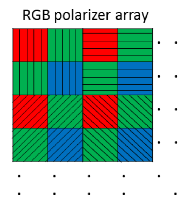
RGB polarizer arrays
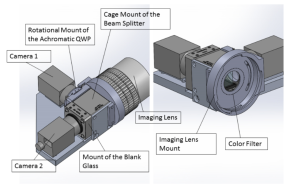
Full polarimetric
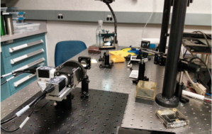
Lab picture
The optical system used for the experiments is described in the article: X. Tu, O. Spires, X. Tian, N. Brock, R. Liang, and S. Pau, "Division of amplitude RGB full-Stokes camera using micro-polarizer arrays: erratum," Opt. Express 26, 4192-4193 (2018). Link to article
First experiment
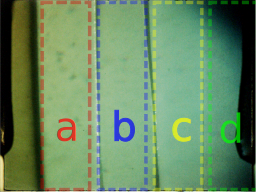
Set of papers for the first experiment. View from the Optical System (a)PE coated paperboard, (b)Uncoated paperboard, (c)High quality photopaper, (d) normal Fotocopy paper
A set of papers were analysed under the optical system. The idea is to find an understanding on the polarimetric relation between paper grades and properties of the material. From left to rigth there are four type of paper (later in the experiment we only cosider the first three):
PE coated paperboard
Uncoated paperboard (substrate of "a")
High quality photopaper
Fotocopy paper(normal printer one)
Results under unpolarized ligth
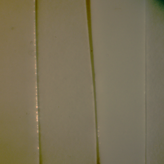
S0
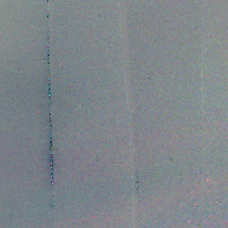
S1
S2
S3
Illumination by a white LED. No polarization filter.
A set of papers were analysed under the optical system. The idea is to find an understanding on the polarimetric relation between paper grades and properties of the material. From left to rigth there are four type of paper (later in the experiment we only cosider the first three):
PE coated paperboard
Uncoated paperboard (substrate of "a")
High quality photopaper
Fotocopy paper(normal printer one)
Results under linearly (vertical) poralized ligth
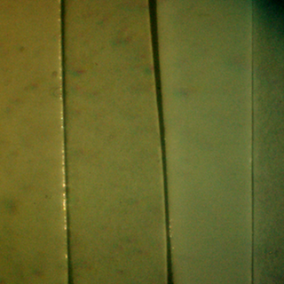
S0
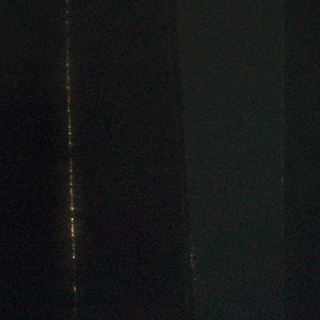
S1
S2
S3
Illumination by a white LED. Linearly polarized. Orientation vertical.
A set of papers were analysed under the optical system. The idea is to find an understanding on the polarimetric relation between paper grades and properties of the material. From left to rigth there are four type of paper (later in the experiment we only cosider the first three):
PE coated paperboard
Uncoated paperboard (substrate of "a")
High quality photopaper
Fotocopy paper(normal printer one)
Results under circulary poralized ligth
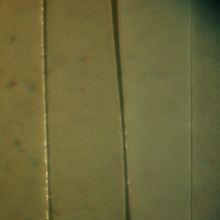
S0
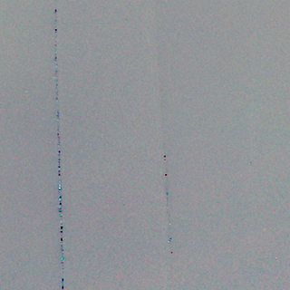
S1
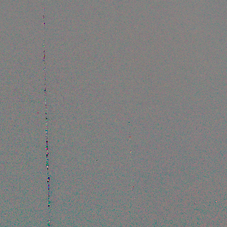
S2
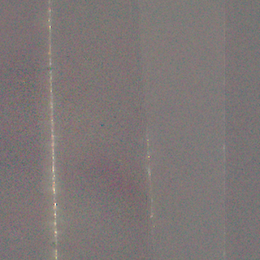
S3
Illumination by a white LED. Circularly polarized filter.
A set of papers were analysed under the optical system. The idea is to find an understanding on the polarimetric relation between paper grades and properties of the material. From left to rigth there are four type of paper (later in the experiment we only cosider the first three):
PE coated paperboard
Uncoated paperboard (substrate of "a")
High quality photopaper
Fotocopy paper(normal printer one)
Mutual relation between parameters:
derivation of polarzation properties
\[DOP\ =\ \frac{\sqrt{s^{2}_{1} +s^{2}_{2} +s^{2}_{3}}}{s_{0}}\]
\[DOLP\ =\ \frac{\sqrt{s^{2}_{1} +s^{2}_{2}}}{s_{0}}\]
\[DOCP\ =\ \frac{s_{3}}{s_{0}}\]
for partially polarized ligth (our case)
\[DOP\ < 1\]
\[S_{0} \ =\ S_{p} \ +\ S_{u} \ =\ \left[\begin{array}{ c }
s_{0}\\
s_{1}\\
s_{2}\\
s_{3}
\end{array}\right] \ =\ s_{0} DOP\left[\begin{array}{ c }
1\\
s_{1} /( s_{0} DOP)\\
s_{2} /( s_{0} DOP)\\
s_{3} /( s_{0} DOP)
\end{array}\right] \ +\ ( 1-DOP)\left[\begin{array}{ c }
1\\
0\\
0\\
0
\end{array}\right]
\]
The question that is formulated is "how these parameters are associated with the papers optical properties?"
Properties like depolarization is a measure of scattering. Roughness and other properties are also associated with scattering events.
Observable Poincaré sphere
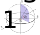
Highlight First Line Test
Want this line visible and colour highlighted on slide entry
Appears 2nd with colour highlight
(Passengers entering and leaving)